Each run is one process (examples/experiment.rs --workload packages) simulating the
whole network on the in-process fake wire, with the fake DNS resolver and its five test domains as
publishers. Packages are published with registry::publish_package and installed with
registry::install_package, the same functions the CLI's publish and
install commands call. Package i belongs to test domain i mod 5 and is
published from one random node, version 1.0.0, 2.0.0, … in order; each version's blob is random
bytes. Installs run from random nodes; half ask for the latest version, half for a random published
one. An install counts as correct only if it returned the version asked for (for "latest",
the newest that was published) with exactly the bytes published for it.
Each configuration is repeated with several seeds; plots show the mean over seeds with a band of ±1 standard deviation, and tables give mean ± std and the variance.
heat_pkg_chain_loss: 90 runsheat_pkg_churn_chain: 40 runspkg_chain: 60 runspkg_churn: 54 runspkg_latency: 60 runspkg_loss: 60 runspkg_publish_loss: 50 runspkg_scalability: 48 runspkg_size: 18 runs20 packages × 5 versions published on a clean wire, then 500 installs from random nodes (half the latest version, half a random published one). An install fetches the latest pointer (asking all K closest nodes, so a stale replica cannot hide a newer version), walks every version record back to the first, verifying each signature and hash, and then fetches the package blob.
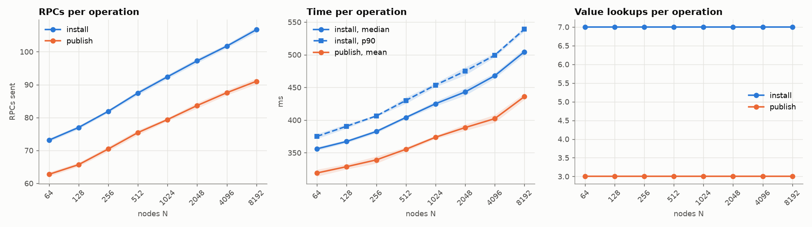
| nodes | seeds | install success | correct | RPCs/install | install ms (median) | RPCs/publish | publish ms |
|---|---|---|---|---|---|---|---|
| 64 | 6 | 1.000 ± 0.000 (var 0) | 1.000 ± 0.000 (var 0) | 73.1 ± 0.5 (var 0.27) | 356 ± 3 (var 7.83) | 62.7 ± 0.6 (var 0.42) | 319 ± 5 (var 28.3) |
| 128 | 6 | 1.000 ± 0.000 (var 0) | 1.000 ± 0.000 (var 0) | 77.0 ± 0.5 (var 0.289) | 367 ± 2 (var 5.49) | 65.7 ± 0.6 (var 0.356) | 329 ± 4 (var 15.8) |
| 256 | 6 | 1.000 ± 0.000 (var 0) | 1.000 ± 0.000 (var 0) | 81.9 ± 0.5 (var 0.203) | 383 ± 3 (var 7.47) | 70.4 ± 0.7 (var 0.511) | 339 ± 5 (var 29.8) |
| 512 | 6 | 1.000 ± 0.000 (var 0) | 1.000 ± 0.000 (var 0) | 87.5 ± 0.7 (var 0.449) | 404 ± 2 (var 5.02) | 75.4 ± 0.8 (var 0.568) | 355 ± 3 (var 10.3) |
| 1024 | 6 | 1.000 ± 0.000 (var 0) | 1.000 ± 0.000 (var 0) | 92.4 ± 0.6 (var 0.385) | 425 ± 4 (var 14.2) | 79.4 ± 0.5 (var 0.241) | 374 ± 3 (var 6.27) |
| 2048 | 6 | 1.000 ± 0.000 (var 0) | 1.000 ± 0.000 (var 0) | 97.2 ± 0.7 (var 0.52) | 443 ± 6 (var 30.8) | 83.7 ± 0.8 (var 0.708) | 389 ± 5 (var 22.9) |
| 4096 | 6 | 1.000 ± 0.000 (var 0) | 1.000 ± 0.000 (var 0) | 101.7 ± 0.6 (var 0.332) | 468 ± 4 (var 16) | 87.5 ± 0.8 (var 0.569) | 402 ± 6 (var 35) |
| 8192 | 6 | 1.000 ± 0.000 (var 0) | 1.000 ± 0.000 (var 0) | 106.7 ± 0.8 (var 0.677) | 505 ± 5 (var 23) | 91.0 ± 0.9 (var 0.817) | 436 ± 5 (var 22.4) |
10 packages with 1–64 versions each, on 1000 nodes. Installing any version walks the chain from the latest pointer back to the first version, one lookup per record, so the cost should grow linearly with the number of versions. Publishing version j first loads the j − 1 records before it, so publishing a whole history of V versions costs O(V²).
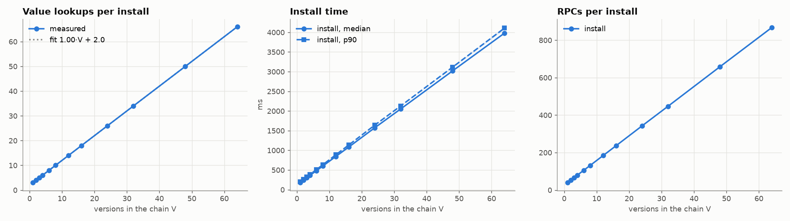
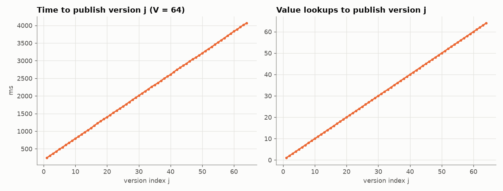
| versions | seeds | install success | lookups/install | RPCs/install | install ms (median) | publish ms |
|---|---|---|---|---|---|---|
| 1 | 5 | 1.000 ± 0.000 (var 0) | 3.0 ± 0.0 (var 0) | 39.7 ± 0.2 (var 0.0524) | 182 ± 3 (var 9.37) | 247 ± 6 (var 34.9) |
| 2 | 5 | 1.000 ± 0.000 (var 0) | 4.0 ± 0.0 (var 0) | 52.9 ± 0.7 (var 0.533) | 242 ± 4 (var 13.8) | 275 ± 6 (var 32.1) |
| 3 | 5 | 1.000 ± 0.000 (var 0) | 5.0 ± 0.0 (var 0) | 65.8 ± 0.5 (var 0.247) | 302 ± 4 (var 14.8) | 308 ± 4 (var 15.6) |
| 4 | 5 | 1.000 ± 0.000 (var 0) | 6.0 ± 0.0 (var 0) | 78.9 ± 0.3 (var 0.109) | 362 ± 2 (var 2.68) | 335 ± 2 (var 5) |
| 6 | 5 | 1.000 ± 0.000 (var 0) | 8.0 ± 0.0 (var 0) | 105.1 ± 0.5 (var 0.291) | 481 ± 2 (var 3.35) | 393 ± 7 (var 53.3) |
| 8 | 5 | 1.000 ± 0.000 (var 0) | 10.0 ± 0.0 (var 0) | 131.3 ± 0.2 (var 0.0321) | 601 ± 2 (var 4.99) | 457 ± 7 (var 48) |
| 12 | 5 | 1.000 ± 0.000 (var 0) | 14.0 ± 0.0 (var 0) | 184.1 ± 0.6 (var 0.354) | 844 ± 3 (var 11.4) | 578 ± 6 (var 32.5) |
| 16 | 5 | 1.000 ± 0.000 (var 0) | 18.0 ± 0.0 (var 0) | 236.8 ± 1.0 (var 1.02) | 1085 ± 7 (var 49.9) | 705 ± 8 (var 66.9) |
| 24 | 5 | 1.000 ± 0.000 (var 0) | 26.0 ± 0.0 (var 0) | 342.6 ± 1.2 (var 1.41) | 1574 ± 7 (var 51.4) | 944 ± 11 (var 114) |
| 32 | 5 | 1.000 ± 0.000 (var 0) | 34.0 ± 0.0 (var 0) | 447.3 ± 0.8 (var 0.623) | 2053 ± 9 (var 79.1) | 1185 ± 8 (var 64.9) |
| 48 | 5 | 1.000 ± 0.000 (var 0) | 50.0 ± 0.0 (var 0) | 658.4 ± 2.1 (var 4.58) | 3021 ± 13 (var 175) | 1672 ± 18 (var 325) |
| 64 | 5 | 1.000 ± 0.000 (var 0) | 66.0 ± 0.0 (var 0) | 867.9 ± 3.7 (var 13.7) | 3981 ± 12 (var 150) | 2159 ± 10 (var 103) |
Packages published on a clean wire, then installed with each datagram dropped with probability p. An install chains V + 2 = 7 lookups (pointer, 5 records, blob) and fails if any of them does, so if a single value lookup succeeds with probability s(p), an install should succeed with about s(p)^7.
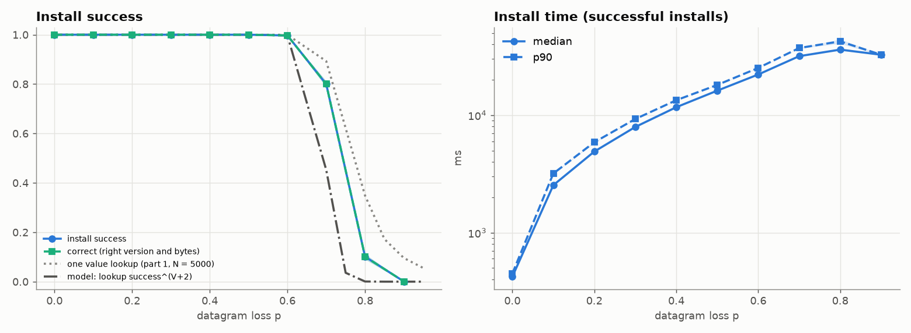
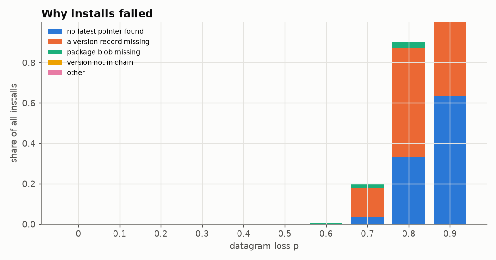
| loss | seeds | success | correct | wrong | stale latest | ms (median) | RPCs |
|---|---|---|---|---|---|---|---|
| 0 | 6 | 1.000 ± 0.000 (var 0) | 1.000 ± 0.000 (var 0) | 0.0000 ± 0.0000 (var 0) | 0.0000 ± 0.0000 (var 0) | 422 ± 4 (var 13.6) | 92 ± 1 (var 0.276) |
| 0.1 | 6 | 1.000 ± 0.000 (var 0) | 1.000 ± 0.000 (var 0) | 0.0000 ± 0.0000 (var 0) | 0.0000 ± 0.0000 (var 0) | 2536 ± 20 (var 403) | 113 ± 1 (var 0.634) |
| 0.2 | 6 | 1.000 ± 0.000 (var 0) | 1.000 ± 0.000 (var 0) | 0.0000 ± 0.0000 (var 0) | 0.0000 ± 0.0000 (var 0) | 4900 ± 33 (var 1.09e+03) | 141 ± 1 (var 0.563) |
| 0.3 | 6 | 1.000 ± 0.000 (var 0) | 1.000 ± 0.000 (var 0) | 0.0000 ± 0.0000 (var 0) | 0.0000 ± 0.0000 (var 0) | 7933 ± 89 (var 7.88e+03) | 178 ± 1 (var 0.778) |
| 0.4 | 6 | 1.000 ± 0.000 (var 0) | 1.000 ± 0.000 (var 0) | 0.0000 ± 0.0000 (var 0) | 0.0000 ± 0.0000 (var 0) | 11682 ± 94 (var 8.92e+03) | 223 ± 1 (var 0.752) |
| 0.5 | 6 | 1.000 ± 0.000 (var 0) | 1.000 ± 0.000 (var 0) | 0.0000 ± 0.0000 (var 0) | 0.0000 ± 0.0000 (var 0) | 16154 ± 42 (var 1.77e+03) | 276 ± 1 (var 0.721) |
| 0.6 | 6 | 0.997 ± 0.003 (var 7.6e-06) | 0.997 ± 0.003 (var 7.6e-06) | 0.0000 ± 0.0000 (var 0) | 0.0000 ± 0.0000 (var 0) | 22172 ± 122 (var 1.48e+04) | 353 ± 2 (var 2.88) |
| 0.7 | 6 | 0.800 ± 0.013 (var 0.000158) | 0.800 ± 0.013 (var 0.000158) | 0.0000 ± 0.0000 (var 0) | 0.0000 ± 0.0000 (var 0) | 31757 ± 152 (var 2.3e+04) | 481 ± 1 (var 2.04) |
| 0.8 | 6 | 0.101 ± 0.011 (var 0.000123) | 0.101 ± 0.011 (var 0.000123) | 0.0000 ± 0.0000 (var 0) | 0.0000 ± 0.0000 (var 0) | 36114 ± 760 (var 5.78e+05) | 527 ± 11 (var 131) |
| 0.9 | 6 | 0.001 ± 0.001 (var 1.07e-06) | 0.001 ± 0.001 (var 1.07e-06) | 0.0000 ± 0.0000 (var 0) | 0.0000 ± 0.0000 (var 0) | 32646 ± 300 (var 8.98e+04) | 452 ± 6 (var 32) |
40 packages × 3 versions published with loss applied during publishing too. A publish stores three values (the blob, the signed version record, the signed latest pointer), each on the K = 10 closest nodes it finds, and fails if any of them reaches no node. The acknowledgement counts show how many replicas each value got.
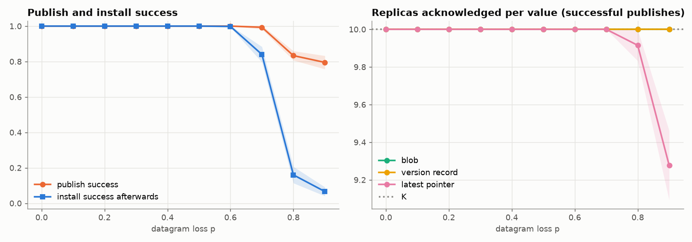
| loss | seeds | publish success | pointer acks | blob acks | publish ms | install success |
|---|---|---|---|---|---|---|
| 0 | 5 | 1.000 ± 0.000 (var 0) | 10.0 ± 0.0 (var 0) | 10.0 ± 0.0 (var 0) | 305 ± 4 (var 19.4) | 1.000 ± 0.000 (var 0) |
| 0.1 | 5 | 1.000 ± 0.000 (var 0) | 10.0 ± 0.0 (var 0) | 10.0 ± 0.0 (var 0) | 1839 ± 47 (var 2.21e+03) | 1.000 ± 0.000 (var 0) |
| 0.2 | 5 | 1.000 ± 0.000 (var 0) | 10.0 ± 0.0 (var 0) | 10.0 ± 0.0 (var 0) | 3532 ± 103 (var 1.06e+04) | 1.000 ± 0.000 (var 0) |
| 0.3 | 5 | 1.000 ± 0.000 (var 0) | 10.0 ± 0.0 (var 0) | 10.0 ± 0.0 (var 0) | 5621 ± 79 (var 6.17e+03) | 1.000 ± 0.000 (var 0) |
| 0.4 | 5 | 1.000 ± 0.000 (var 0) | 10.0 ± 0.0 (var 0) | 10.0 ± 0.0 (var 0) | 8198 ± 91 (var 8.22e+03) | 1.000 ± 0.000 (var 0) |
| 0.5 | 5 | 1.000 ± 0.000 (var 0) | 10.0 ± 0.0 (var 0) | 10.0 ± 0.0 (var 0) | 11201 ± 117 (var 1.36e+04) | 1.000 ± 0.000 (var 0) |
| 0.6 | 5 | 1.000 ± 0.000 (var 0) | 10.0 ± 0.0 (var 0) | 10.0 ± 0.0 (var 0) | 14693 ± 128 (var 1.63e+04) | 0.998 ± 0.004 (var 2e-05) |
| 0.7 | 5 | 0.993 ± 0.011 (var 0.000118) | 10.0 ± 0.0 (var 0) | 10.0 ± 0.0 (var 0) | 19449 ± 357 (var 1.28e+05) | 0.840 ± 0.044 (var 0.0019) |
| 0.8 | 5 | 0.833 ± 0.026 (var 0.000694) | 9.9 ± 0.1 (var 0.00681) | 10.0 ± 0.0 (var 0) | 23165 ± 372 (var 1.38e+05) | 0.160 ± 0.046 (var 0.00215) |
| 0.9 | 5 | 0.795 ± 0.038 (var 0.00141) | 9.3 ± 0.2 (var 0.0339) | 10.0 ± 0.0 (var 0) | 19304 ± 540 (var 2.91e+05) | 0.066 ± 0.025 (var 0.00063) |
One-way latency L on every datagram, with and without 30% loss. An install is about seven lookups in a row, each a few round trips, so its time should grow roughly linearly in L until a round trip outlasts the RPC retry budget.
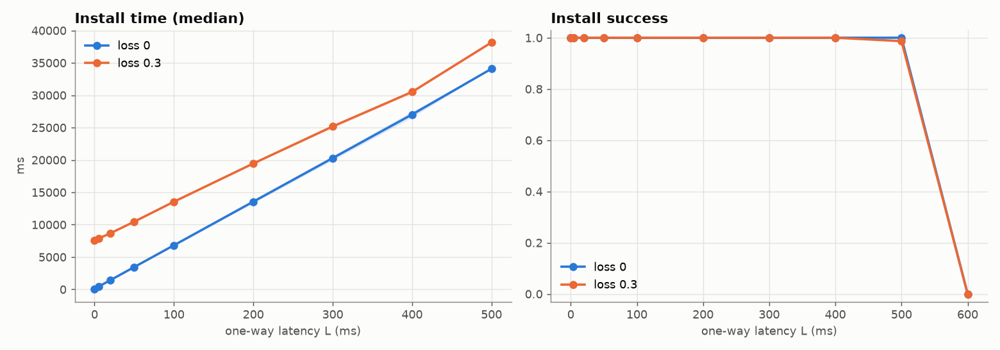
| latency_ms | loss | seeds | success | ms (median) | ms (p90) |
|---|---|---|---|---|---|
| 0 | 0 | 3 | 1.000 ± 0.000 (var 0) | 21 ± 2 (var 3.1) | 24 ± 3 (var 11.6) |
| 0 | 0.3 | 3 | 1.000 ± 0.000 (var 0) | 7614 ± 55 (var 3.05e+03) | 8988 ± 111 (var 1.24e+04) |
| 5 | 0 | 3 | 1.000 ± 0.000 (var 0) | 424 ± 6 (var 38.7) | 450 ± 9 (var 84.9) |
| 5 | 0.3 | 3 | 1.000 ± 0.000 (var 0) | 7863 ± 65 (var 4.27e+03) | 9241 ± 212 (var 4.51e+04) |
| 20 | 0 | 3 | 1.000 ± 0.000 (var 0) | 1432 ± 21 (var 441) | 1516 ± 24 (var 559) |
| 20 | 0.3 | 3 | 1.000 ± 0.000 (var 0) | 8673 ± 46 (var 2.13e+03) | 10057 ± 204 (var 4.18e+04) |
| 50 | 0 | 3 | 1.000 ± 0.000 (var 0) | 3453 ± 54 (var 2.95e+03) | 3665 ± 48 (var 2.29e+03) |
| 50 | 0.3 | 3 | 1.000 ± 0.000 (var 0) | 10462 ± 52 (var 2.73e+03) | 11798 ± 156 (var 2.45e+04) |
| 100 | 0 | 3 | 1.000 ± 0.000 (var 0) | 6818 ± 115 (var 1.32e+04) | 7225 ± 116 (var 1.35e+04) |
| 100 | 0.3 | 3 | 1.000 ± 0.000 (var 0) | 13547 ± 58 (var 3.36e+03) | 14925 ± 16 (var 248) |
| 200 | 0 | 3 | 1.000 ± 0.000 (var 0) | 13560 ± 226 (var 5.1e+04) | 14368 ± 224 (var 5.02e+04) |
| 200 | 0.3 | 3 | 1.000 ± 0.000 (var 0) | 19450 ± 116 (var 1.35e+04) | 20792 ± 230 (var 5.31e+04) |
| 300 | 0 | 3 | 1.000 ± 0.000 (var 0) | 20286 ± 342 (var 1.17e+05) | 21511 ± 304 (var 9.27e+04) |
| 300 | 0.3 | 3 | 1.000 ± 0.000 (var 0) | 25178 ± 226 (var 5.13e+04) | 26788 ± 235 (var 5.54e+04) |
| 400 | 0 | 3 | 1.000 ± 0.000 (var 0) | 27023 ± 453 (var 2.06e+05) | 28626 ± 460 (var 2.11e+05) |
| 400 | 0.3 | 3 | 1.000 ± 0.000 (var 0) | 30512 ± 205 (var 4.2e+04) | 32389 ± 113 (var 1.27e+04) |
| 500 | 0 | 3 | 1.000 ± 0.000 (var 0) | 34082 ± 4 (var 15.9) | 36090 ± 2 (var 3.6) |
| 500 | 0.3 | 3 | 0.987 ± 0.003 (var 1.11e-05) | 38152 ± 7 (var 45.2) | 42171 ± 5 (var 23.8) |
| 600 | 0 | 3 | 0.000 ± 0.000 (var 0) | – | – |
| 600 | 0.3 | 3 | 0.000 ± 0.000 (var 0) | – | – |
1000 nodes, installs spread over 5 minutes while c nodes per second are replaced. A package stays installable only while its latest pointer, every version record and the blob asked for all survive. Republishing copies each value to the current K closest nodes; a latest pointer is republished only together with a chain it could verify.
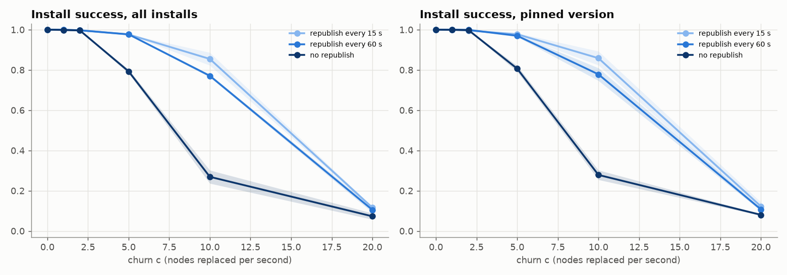
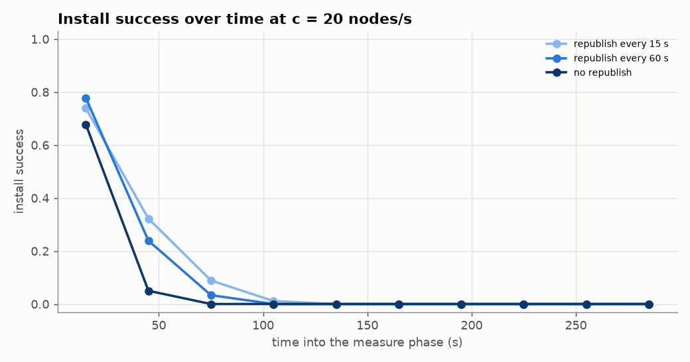
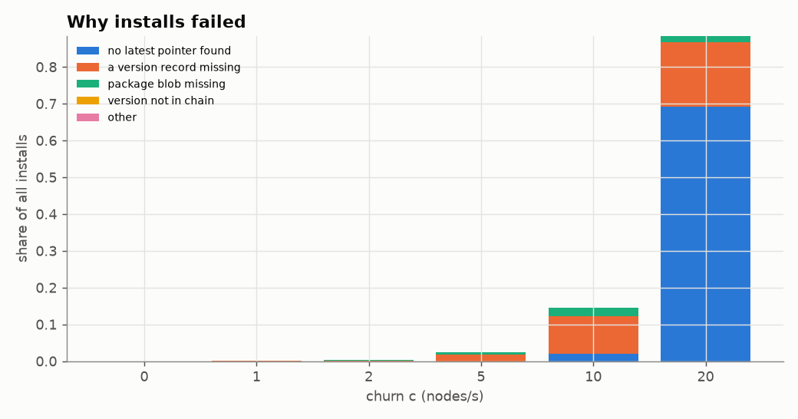
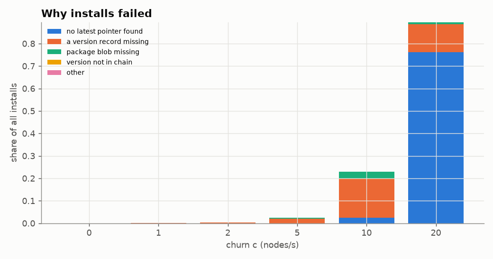
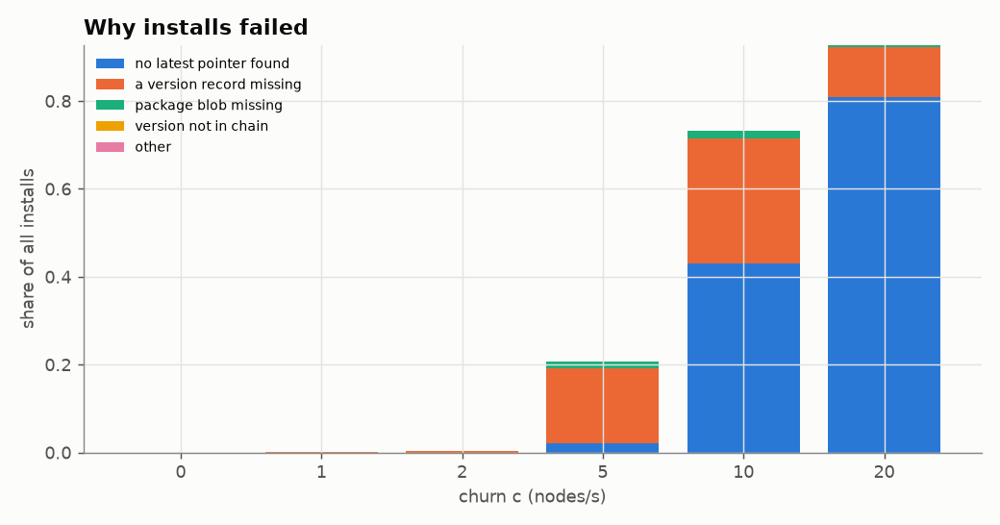
| churn | republish_s | seeds | success | latest | pinned | wrong | stale | network churned |
|---|---|---|---|---|---|---|---|---|
| 0 | 15 | 3 | 1.000 ± 0.000 (var 0) | 1.000 ± 0.000 (var 0) | 1.000 ± 0.000 (var 0) | 0.0000 ± 0.0000 (var 0) | 0.000 ± 0.000 (var 0) | 0.00 ± 0.00 (var 0) |
| 0 | 60 | 3 | 1.000 ± 0.000 (var 0) | 1.000 ± 0.000 (var 0) | 1.000 ± 0.000 (var 0) | 0.0000 ± 0.0000 (var 0) | 0.000 ± 0.000 (var 0) | 0.00 ± 0.00 (var 0) |
| 0 | 3600 | 3 | 1.000 ± 0.000 (var 0) | 1.000 ± 0.000 (var 0) | 1.000 ± 0.000 (var 0) | 0.0000 ± 0.0000 (var 0) | 0.000 ± 0.000 (var 0) | 0.00 ± 0.00 (var 0) |
| 1 | 15 | 3 | 0.999 ± 0.001 (var 9.26e-07) | 0.999 ± 0.002 (var 3.96e-06) | 1.000 ± 0.000 (var 0) | 0.0000 ± 0.0000 (var 0) | 0.000 ± 0.000 (var 0) | 0.30 ± 0.00 (var 1e-06) |
| 1 | 60 | 3 | 0.999 ± 0.001 (var 9.26e-07) | 0.999 ± 0.002 (var 3.96e-06) | 1.000 ± 0.000 (var 0) | 0.0000 ± 0.0000 (var 0) | 0.000 ± 0.000 (var 0) | 0.30 ± 0.00 (var 2.33e-06) |
| 1 | 3600 | 3 | 0.998 ± 0.003 (var 8.33e-06) | 0.998 ± 0.004 (var 1.59e-05) | 0.999 ± 0.002 (var 3.47e-06) | 0.0000 ± 0.0000 (var 0) | 0.000 ± 0.000 (var 0) | 0.30 ± 0.00 (var 0) |
| 2 | 15 | 3 | 0.997 ± 0.002 (var 3.7e-06) | 0.999 ± 0.002 (var 3.96e-06) | 0.996 ± 0.002 (var 3.4e-06) | 0.0000 ± 0.0000 (var 0) | 0.000 ± 0.000 (var 0) | 0.61 ± 0.00 (var 6.33e-06) |
| 2 | 60 | 3 | 0.997 ± 0.000 (var 0) | 0.994 ± 0.002 (var 3.81e-06) | 0.999 ± 0.002 (var 3.47e-06) | 0.0000 ± 0.0000 (var 0) | 0.000 ± 0.000 (var 0) | 0.61 ± 0.00 (var 5.33e-06) |
| 2 | 3600 | 3 | 0.996 ± 0.003 (var 6.48e-06) | 0.994 ± 0.004 (var 1.6e-05) | 0.998 ± 0.002 (var 3.47e-06) | 0.0000 ± 0.0000 (var 0) | 0.000 ± 0.000 (var 0) | 0.60 ± 0.00 (var 3e-06) |
| 5 | 15 | 3 | 0.976 ± 0.001 (var 9.26e-07) | 0.975 ± 0.007 (var 5.44e-05) | 0.977 ± 0.006 (var 3.5e-05) | 0.0000 ± 0.0000 (var 0) | 0.000 ± 0.000 (var 0) | 1.53 ± 0.01 (var 0.000158) |
| 5 | 60 | 3 | 0.977 ± 0.003 (var 8.33e-06) | 0.984 ± 0.002 (var 3.6e-06) | 0.970 ± 0.005 (var 2.82e-05) | 0.0000 ± 0.0000 (var 0) | 0.000 ± 0.000 (var 0) | 1.53 ± 0.00 (var 1.23e-05) |
| 5 | 3600 | 3 | 0.793 ± 0.009 (var 8.98e-05) | 0.778 ± 0.030 (var 0.000923) | 0.806 ± 0.015 (var 0.000221) | 0.0000 ± 0.0000 (var 0) | 0.000 ± 0.000 (var 0) | 1.52 ± 0.01 (var 3.23e-05) |
| 10 | 15 | 3 | 0.854 ± 0.032 (var 0.00101) | 0.850 ± 0.029 (var 0.000843) | 0.858 ± 0.035 (var 0.00119) | 0.0000 ± 0.0000 (var 0) | 0.000 ± 0.000 (var 0) | 3.16 ± 0.02 (var 0.0003) |
| 10 | 60 | 3 | 0.771 ± 0.007 (var 4.81e-05) | 0.763 ± 0.023 (var 0.000507) | 0.778 ± 0.031 (var 0.000991) | 0.0000 ± 0.0000 (var 0) | 0.000 ± 0.000 (var 0) | 3.17 ± 0.01 (var 0.00012) |
| 10 | 3600 | 3 | 0.269 ± 0.033 (var 0.00107) | 0.259 ± 0.046 (var 0.00207) | 0.278 ± 0.024 (var 0.000571) | 0.0000 ± 0.0000 (var 0) | 0.000 ± 0.000 (var 0) | 3.04 ± 0.02 (var 0.000308) |
| 20 | 15 | 3 | 0.116 ± 0.005 (var 2.31e-05) | 0.109 ± 0.032 (var 0.000995) | 0.122 ± 0.021 (var 0.000436) | 0.0000 ± 0.0000 (var 0) | 0.000 ± 0.000 (var 0) | 6.07 ± 0.01 (var 0.00011) |
| 20 | 60 | 3 | 0.105 ± 0.014 (var 0.000186) | 0.103 ± 0.023 (var 0.00054) | 0.107 ± 0.008 (var 6.14e-05) | 0.0000 ± 0.0000 (var 0) | 0.000 ± 0.000 (var 0) | 6.09 ± 0.00 (var 3.33e-07) |
| 20 | 3600 | 3 | 0.073 ± 0.015 (var 0.00024) | 0.065 ± 0.034 (var 0.00115) | 0.080 ± 0.003 (var 1.14e-05) | 0.0000 ± 0.0000 (var 0) | 0.000 ± 0.000 (var 0) | 6.09 ± 0.02 (var 0.000457) |
Blob sizes from 256 B to 256 KiB. STORE and FIND_VALUE travel over the connection transport, which carries any size whole, so size should matter little on the simulated wire (which models latency per message, not bandwidth).
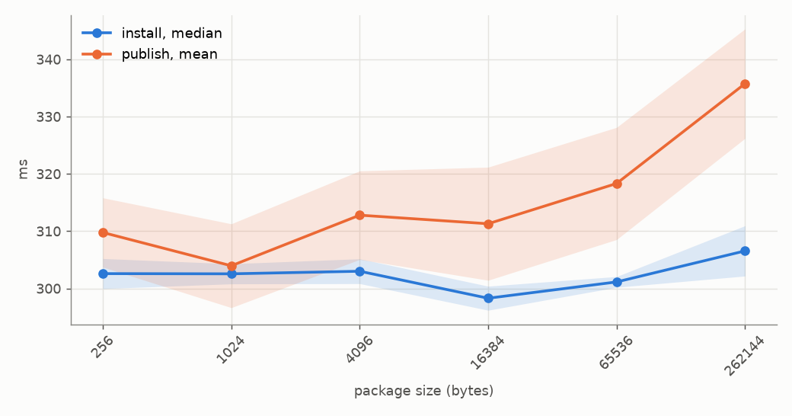
| package_bytes | seeds | success | install ms | publish ms |
|---|---|---|---|---|
| 256 | 3 | 1.000 ± 0.000 (var 0) | 303 ± 3 (var 6.88) | 310 ± 6 (var 36.6) |
| 1024 | 3 | 1.000 ± 0.000 (var 0) | 303 ± 2 (var 3.08) | 304 ± 7 (var 53.5) |
| 4096 | 3 | 1.000 ± 0.000 (var 0) | 303 ± 2 (var 4.69) | 313 ± 8 (var 59.8) |
| 16384 | 3 | 1.000 ± 0.000 (var 0) | 298 ± 2 (var 4.41) | 311 ± 10 (var 97.4) |
| 65536 | 3 | 1.000 ± 0.000 (var 0) | 301 ± 1 (var 0.875) | 318 ± 10 (var 95.8) |
| 262144 | 3 | 1.000 ± 0.000 (var 0) | 307 ± 4 (var 19.3) | 336 ± 10 (var 91.2) |
Install success and time over both at once (1000 nodes). Longer chains mean more lookups that each can fail, so success should fall faster with loss the longer the chain.
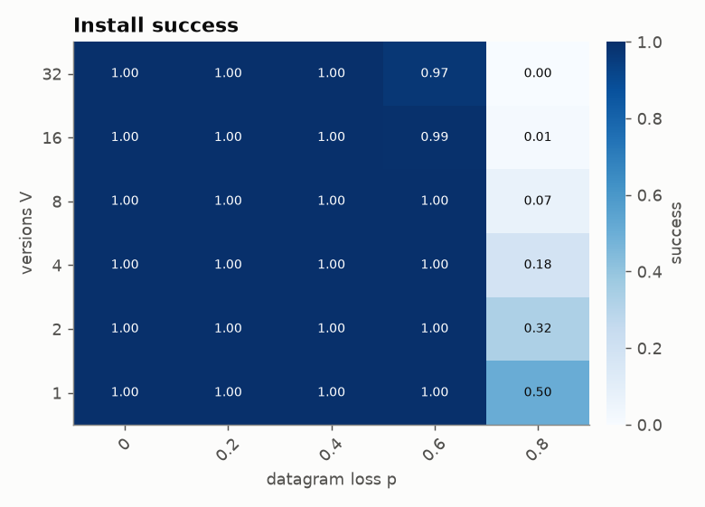
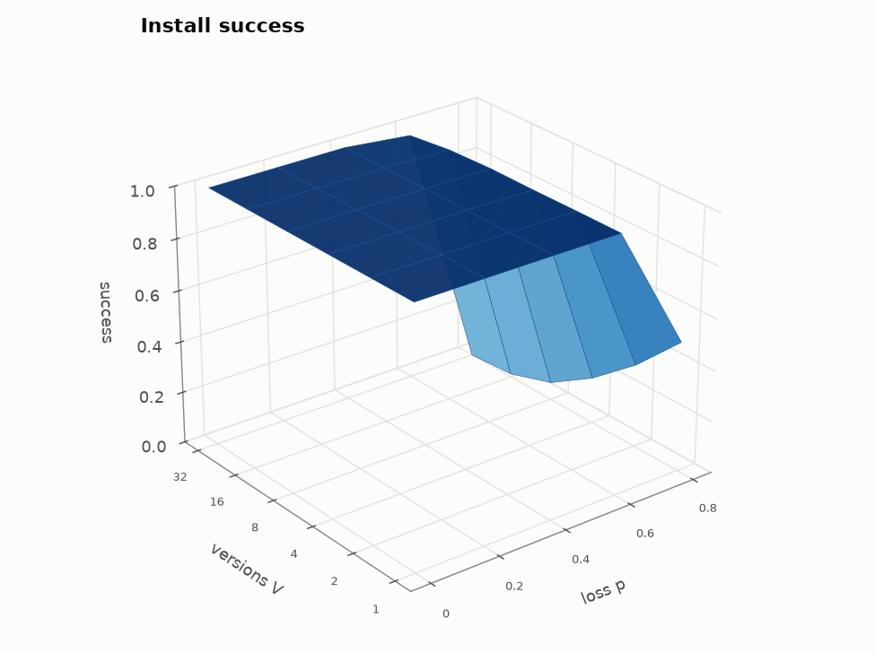
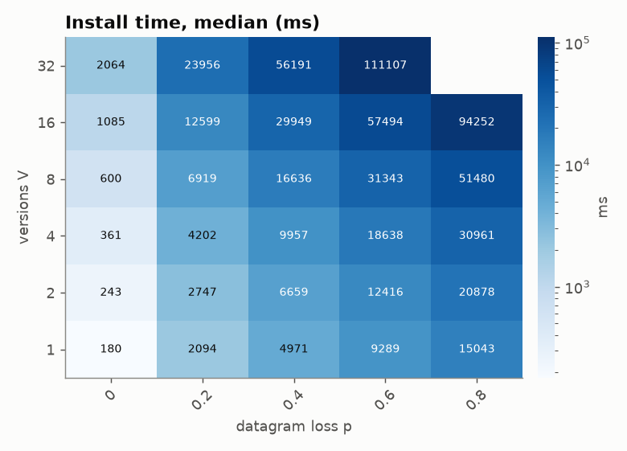
Install success under churn (republishing every 60 s) for chains of 1–16 versions. Every extra version is one more value that has to survive.
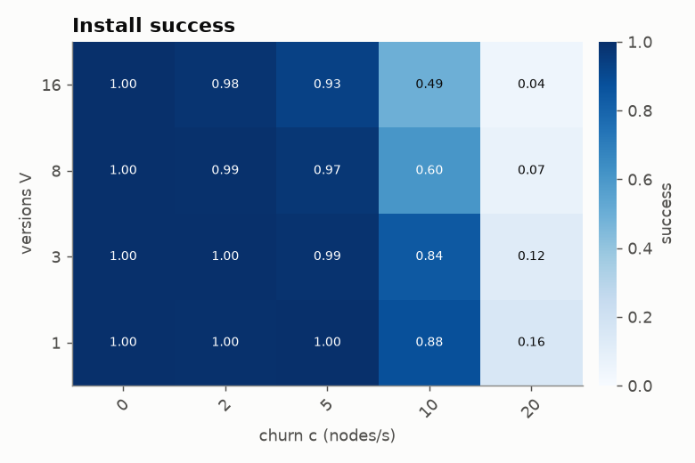